Kişisel CV ve portfolyo sitenizi kurmak, içeriğinizi yönetmek ve yayında tutmak için ihtiyacınız olan her şey.
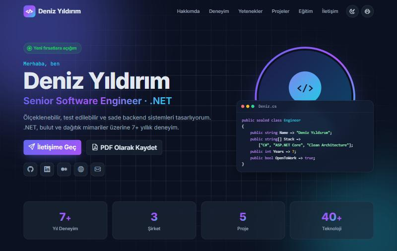
KURULUM.md dosyasında ayrıca anlatılmıştır.
CvPortal; bir yazılım mühendisinin özgeçmişini modern bir web sitesi olarak yayınlayan ve tüm içeriğin kod yazmadan, bir yönetim panelinden düzenlenmesini sağlayan hazır bir üründür.
Ziyaretçilerin gördüğü tek sayfalık site: hakkımda, deneyim zaman çizelgesi, yetenekler, projeler, eğitim, sertifikalar ve iletişim formu. Açık/koyu tema ve mobil uyumlu.
/Admin adresindeki panelden tüm içerik eklenir, düzenlenir, gizlenir veya silinir. Fotoğraf ve CV dosyası doğrudan yüklenir.
Sitedeki iletişim formundan gönderilen mesajlar panelde toplanır; okundu/okunmadı takibi yapılır, e-postayla yanıtlanır.
İçeriği başka bir panelden veya mobil uygulamadan yönetmek isteyenler için anahtarla korunan bir API. Varsayılan olarak kapalıdır.
| Kavram | Anlamı |
|---|---|
| Yayında / Gizli | Her içerik kaydı sitede gösterilebilir ya da gizlenebilir. Gizli kayıtlar silinmez, yalnızca ziyaretçilere görünmez. |
| Sıra | Kayıtların sitede hangi sırayla listeleneceği. Küçük sayı önce gelir. 0 bırakılırsa kayıt listenin sonuna eklenir. |
| Öne çıkan proje | Yıldızla işaretlenen projeler listenin başında ve rozetle gösterilir. |
| Örnek (demo) içerik | İlk kurulumda sitenin nasıl görüneceğini göstermek için gelen hazır içerik. Kurulumda silinebilir ya da sonradan kendi bilgilerinizle değiştirilebilir. |
CvPortal "fişi tak çalıştır" mantığıyla tasarlanmıştır: veritabanı ve tablolar ilk açılışta otomatik oluşturulur.
| Bileşen | Sürüm | Not |
|---|---|---|
| İşletim sistemi | Windows 10/11, Windows Server 2016+ | |
| .NET | ASP.NET Core 10 Runtime | IIS için Hosting Bundle |
| Veritabanı | SQL Server 2016 veya üzeri | Ücretsiz SQL Server Express yeterlidir |
| Yönetim aracı | SQL Server Management Studio | İsteğe bağlı (yedek alma için) |
C:\CvPortal.appsettings.json dosyasını Not Defteri ile açın ve DefaultConnection satırını kontrol edin. Bilgisayarınızda SQL Server Express kuruluysa varsayılan değer olduğu gibi çalışır:
"DefaultConnection": "Server=.\\SQLEXPRESS;Database=CvPortal;Trusted_Connection=True;TrustServerCertificate=True;MultipleActiveResultSets=True"
CvPortal.Web.exe dosyasına çift tıklayın. Açılan pencerede Now listening on: http://localhost:5000 yazısını görün.KURULUM.md dosyasının 4. bölümündeki adımları izleyin: Hosting Bundle, uygulama havuzu, App_Data klasör izni ve veritabanı izni.Sihirbaz yalnızca bir kez, ilk yönetici hesabı oluşturulana kadar görünür. Kurulum tamamlanmadan /Admin adresine gidilirse otomatik olarak buraya yönlendirilirsiniz.
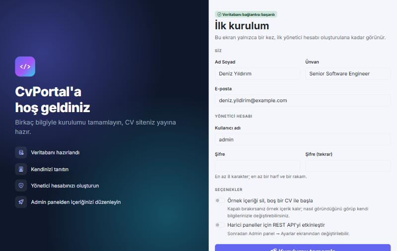
| Alan | Açıklama |
|---|---|
| Ad Soyad, Ünvan, E-posta | Sitenizin üst bölümünde ve iletişim alanında görünür. |
| Kullanıcı adı, Şifre | Yönetim paneline giriş bilgileriniz. Şifre en az 8 karakter olmalı, en az bir harf ve bir rakam içermelidir. |
| Örnek içeriği sil | Açarsanız boş bir CV ile başlarsınız. Kapalı bırakırsanız örnek içerik kalır; siteyi görüp kendi bilgilerinizle değiştirirsiniz. |
| REST API | Harici bir panel kullanmayacaksanız kapalı bırakın. Sonradan Ayarlar ekranından açılabilir. |
Yönetim paneline siteadresiniz/Admin adresinden ulaşırsınız. Sitenin alt kısmındaki küçük kilit simgesi de sizi buraya götürür.
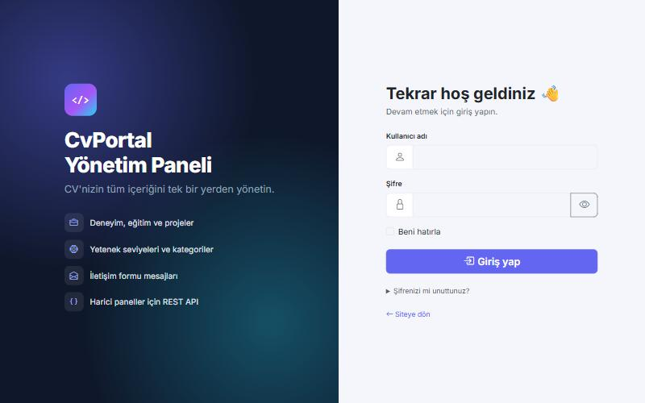
Girişten sonra açılan özet ekranı. Sitenizin durumunu tek bakışta gösterir.
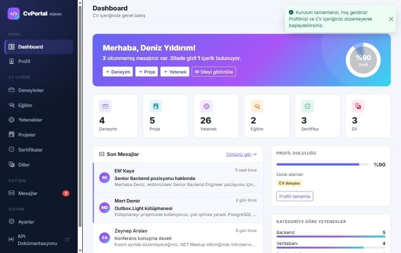
| Bölüm | Ne gösterir? |
|---|---|
| Karşılama kartı | Okunmamış mesaj ve gizli içerik sayısı; yeni deneyim / proje / yetenek eklemek için kısayollar. |
| Profil doluluğu (halka) | Profilinizin ne kadar eksiksiz olduğu. Sağ sütunda eksik alanlar listelenir. |
| Sayaç kartları | Her içerik türünden kaç kayıt olduğu. Karta tıklayınca ilgili listeye gidilir. |
| Son mesajlar | İletişim formundan gelen en yeni 5 mesaj. Okunmamışlar renkli çizgiyle işaretlidir. |
| Yetenek dağılımı, teknolojiler | Kategorilere göre yetenek sayısı ve en çok kullandığınız teknolojiler. |
Sitenin en üstündeki tanıtım bölümü, "Hakkımda" metni, iletişim bilgileri ve sosyal medya bağlantıları bu ekrandan yönetilir.
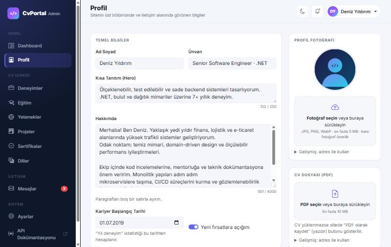
https:// ile başlamalıdır.| Dosya | Kabul edilen türler | En fazla |
|---|---|---|
| Profil fotoğrafı | JPG, PNG, WebP, GIF (kare önerilir) | 5 MB |
| CV dosyası | Yalnızca PDF | 10 MB |
Güvenlik için dosya türü içeriğine bakılarak kontrol edilir; adı ".jpg" olup resim olmayan dosyalar ve SVG görseller kabul edilmez.
Deneyimler, Eğitim, Yetenekler, Projeler, Sertifikalar ve Diller ekranları aynı mantıkla çalışır: bir liste ekranı ve bir ekleme/düzenleme formu.
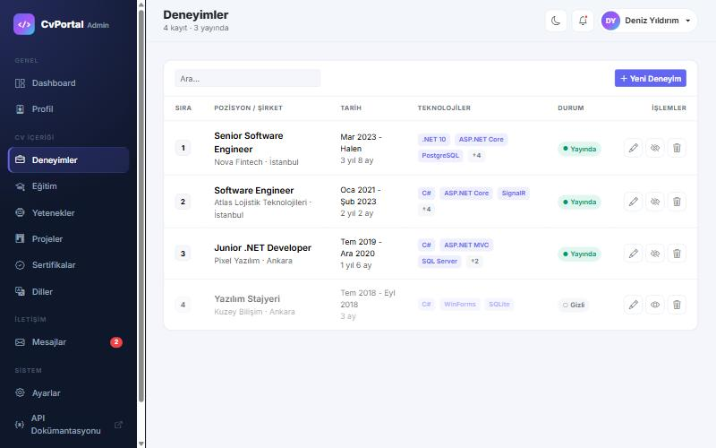
| Düğme | Ne yapar? |
|---|---|
| + Yeni … (sağ üst) | Yeni kayıt formunu açar. |
| Kalem simgesi | Kaydı düzenler. |
| Göz simgesi | Kaydı sitede gizler veya tekrar gösterir. Kayıt silinmez. |
| Çöp kutusu simgesi | Kaydı kalıcı olarak siler. Önce bir onay penceresi çıkar. |
| Ara kutusu | Listeyi yazdığınız kelimeye göre anında süzer. |
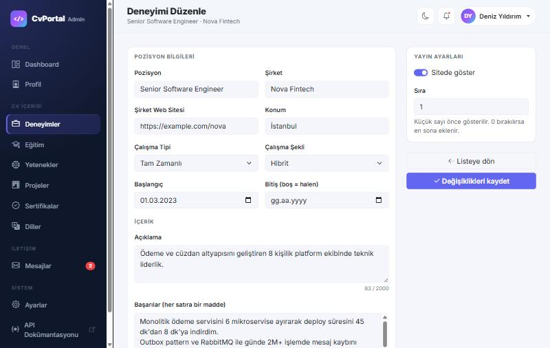
C#, ASP.NET Core, SQL Server). Yazarken etiket önizlemesi oluşur.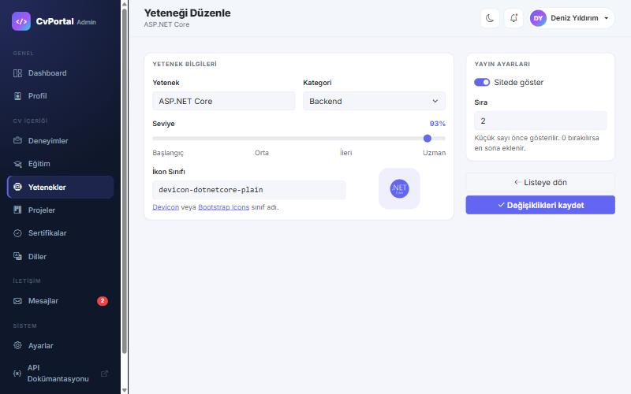
devicon.dev veya icons.getbootstrap.com sitelerinden bir sınıf adı yazın (ör. devicon-csharp-plain); sağdaki kutuda önizlenir.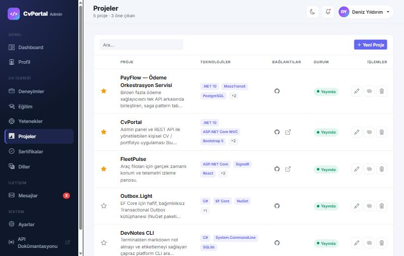
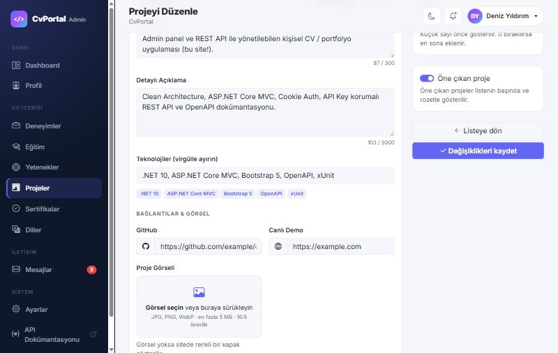
| Ekran | Dikkat edilecekler |
|---|---|
| Eğitim | Mezuniyet tarihi boşsa sitede "Devam ediyor" yazar. Derece alanında hazır öneriler (Lisans, Yüksek Lisans …) çıkar. |
| Sertifikalar | Geçerlilik bitişi geçmişse listede ve sitede "Süresi doldu" rozeti görünür. Doğrulama linki girerseniz sitede "Doğrula" bağlantısı çıkar. |
| Diller | Seviye A1'den Anadil'e kadar seçilir; sitede "Hakkımda" kartında çubuk olarak gösterilir. |
Sitedeki iletişim formundan gönderilen tüm mesajlar burada toplanır. Okunmamış mesaj sayısı sol menüde kırmızı rozetle gösterilir.
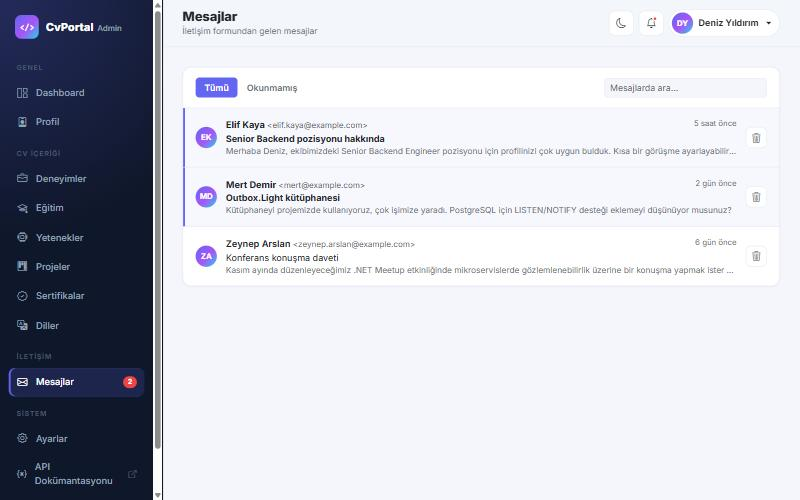
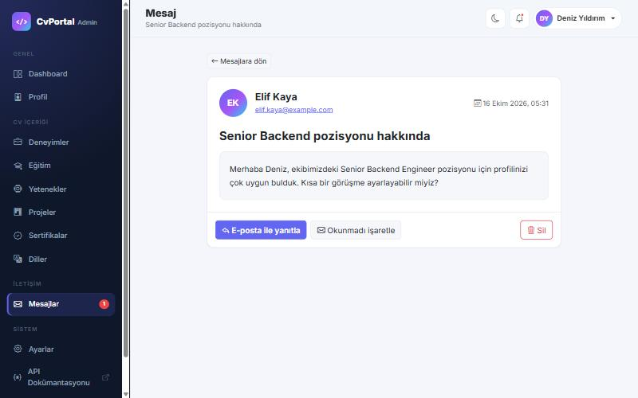
Sol menüde Sistem → Ayarlar veya sağ üstteki adınıza tıklayıp Ayarlar ve şifre.
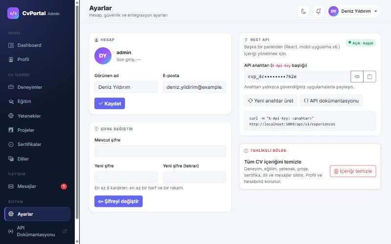
| Bölüm | Açıklama |
|---|---|
| Hesap | Panelde görünen adınızı ve hesap e-postanızı değiştirir. Kullanıcı adı ve son giriş zamanı da burada görünür. |
| Şifre Değiştir | Mevcut şifrenizi ve iki kez yeni şifrenizi girin (en az 8 karakter, harf + rakam). |
| REST API | Sağ üstteki rozetle API'yi açıp kapatırsınız. Anahtarı göz simgesiyle görür, pano simgesiyle kopyalarsınız. Yeni anahtar üret eski anahtarı hemen geçersiz kılar. |
| Tehlikeli Bölge | İçeriği temizle; deneyim, eğitim, yetenek, proje, sertifika, dil ve mesajların tamamını siler. Profiliniz ve hesabınız korunur. |
Yalnızca içeriğinizi başka bir yazılımdan (örneğin kendi yaptığınız bir React paneli veya mobil uygulama) yönetmek istiyorsanız gereklidir. Her istekte X-Api-Key başlığında anahtar gönderilir. Tüm uç noktalar ve denemeler için siteadresiniz/scalar/v1 adresindeki etkileşimli dokümantasyonu kullanın.
curl -H "X-Api-Key: <anahtarınız>" https://siteadresiniz/api/v1/experiences
Herkese açık CV verisi anahtar gerektirmeden /api/v1/cv adresinden JSON olarak alınabilir.
Panelde yaptığınız her değişiklik kaydettiğiniz anda sitede görünür. Gizli kayıtlar ziyaretçilere gösterilmez.
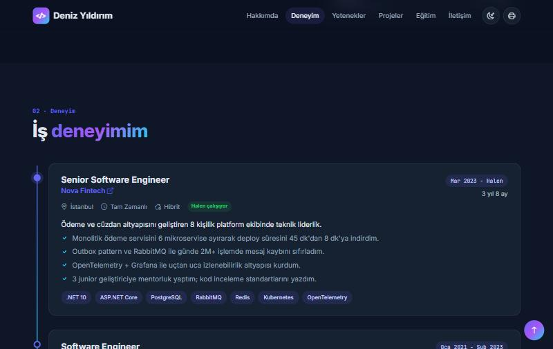
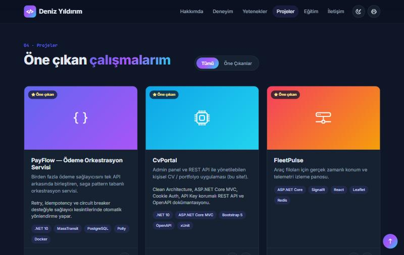
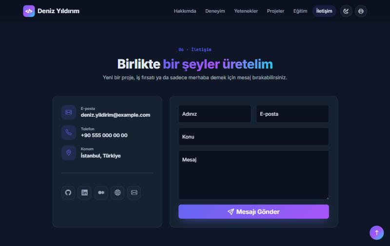
Tam bir yedek iki parçadan oluşur:
database/04_Backup.sql dosyasını açıp F5'e basın. Tarih damgalı bir .bak dosyası SQL Server'ın yedek klasörüne yazılır.App_Data\uploads klasörünü kopyalayın.Geri yükleme: SSMS → Databases → sağ tık → Restore Database…, ardından uploads klasörünü yerine kopyalayın.
appsettings.json dosyasının ve App_Data klasörünün üzerine yazmayın.Sunucuda uygulama klasöründe bir komut istemi (cmd) açıp şunu çalıştırın:
cd C:\inetpub\CvPortal CvPortal.Web.exe reset-password admin YeniSifre2026
Kullanıcı adınızı hatırlamıyorsanız yanlış bir ad yazın; komut mevcut kullanıcıları listeler. Komutu çalıştıramıyorsanız SSMS'te database/03_ResetSetup.sql çalıştırın, uygulamayı yeniden başlatın ve /setup ile yeni bir hesap oluşturun. Bu işlem içeriğinizi silmez.
| Belirti | Çözüm |
|---|---|
| Uygulama açılmıyor, "Veritabanına bağlanılamadı" yazıyor | SQL Server servisinin çalıştığını kontrol edin (services.msc → SQL Server (SQLEXPRESS)). appsettings.json içindeki sunucu adını doğrulayın. |
| IIS: HTTP Error 500.19 | .NET 10 Hosting Bundle kurulu değil. |
| IIS: HTTP Error 500.30 | Uygulama başlarken hata aldı; genellikle veritabanı bağlantısı veya izni. Olay Görüntüleyicisi → Windows Günlükleri → Uygulama kayıtlarına bakın. |
| "Login failed for user 'IIS APPPOOL\…'" | Uygulama havuzuna veritabanı izni verin (database/01_CreateDatabase.sql, Seçenek A). |
| Her yeniden başlatmada oturum kapanıyor | App_Data klasörüne yazma izni verin; IIS uygulama havuzunda Load User Profile = True olmalı. |
| Fotoğraf / PDF yüklenmiyor | App_Data yazma izni; dosya türü ve boyut sınırlarını kontrol edin (görsel 5 MB, PDF 10 MB). |
| Girişte "Çok fazla istek" sayfası | Kısa sürede çok fazla hatalı deneme yapıldı. 5 dakika bekleyip tekrar deneyin. |
| Harici panel API'ye erişemiyor (403) | Ayarlar → REST API kapalı. Açın ve doğru anahtarı kullandığınızdan emin olun. |
| Sitenin çalıştığını hızlıca kontrol etmek | siteadresiniz/health adresi Healthy yazmalıdır. |
ConnectionStrings:DefaultConnection veritabanı bağlantısı ·
Database:AutoMigrate açılışta tabloları oluşturur/günceller ·
Database:SeedDemoData boş veritabanına örnek içerik ekler ·
Database:Provider "InMemory" yapılırsa veritabanısız demo modu ·
Api:AllowedOrigins API'yi tarayıcıdan çağıracak panel adresleri.
Şifreler ve API anahtarı bu dosyada değil, veritabanında saklanır.